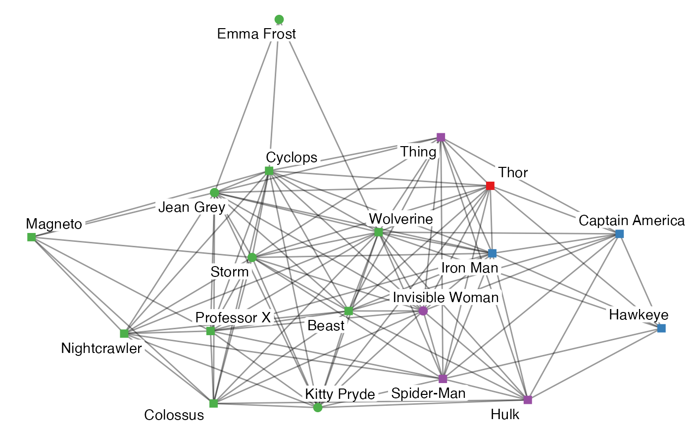
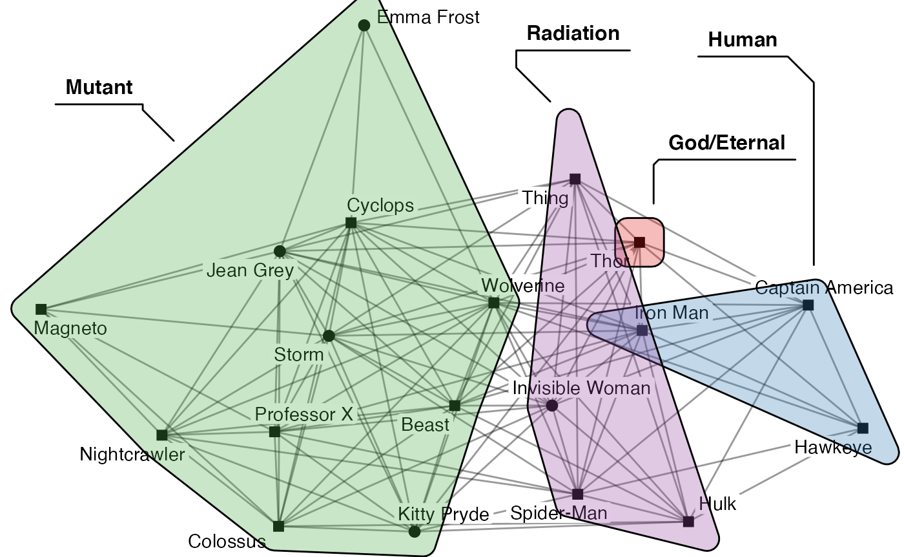
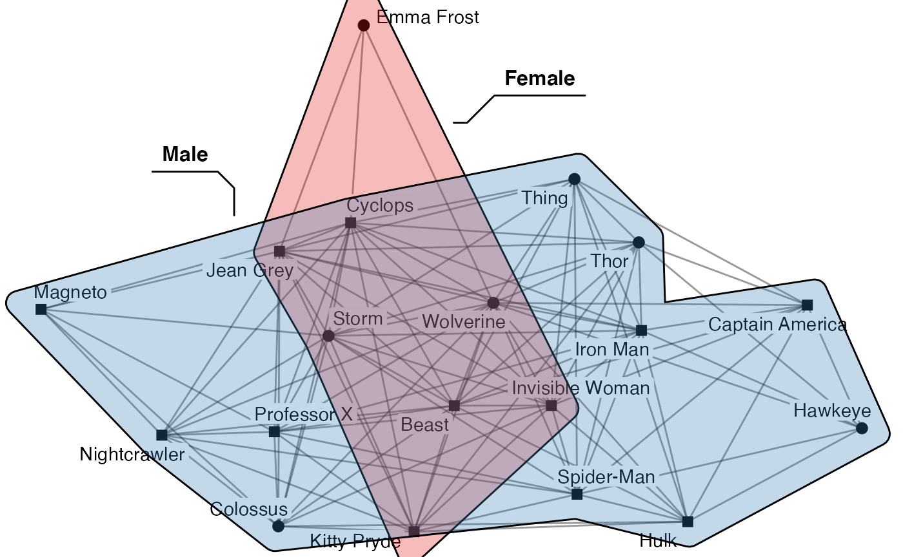
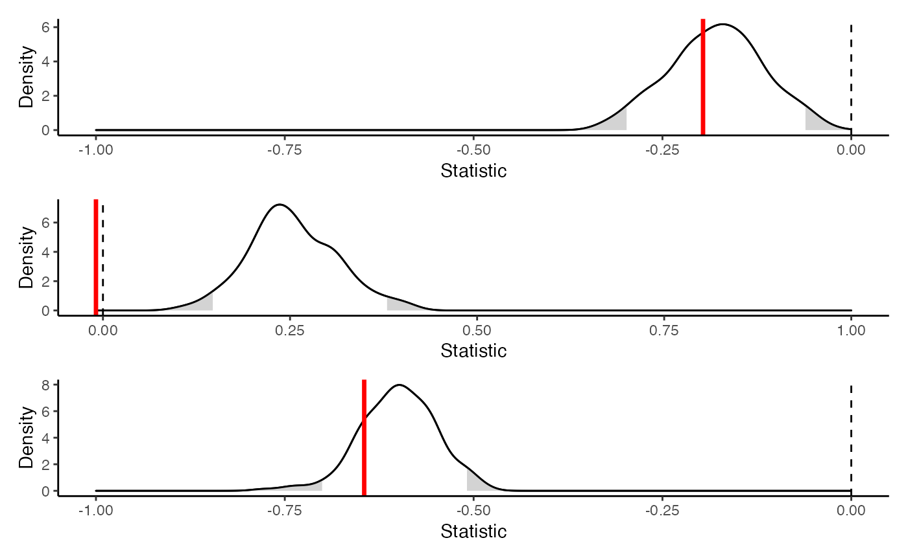
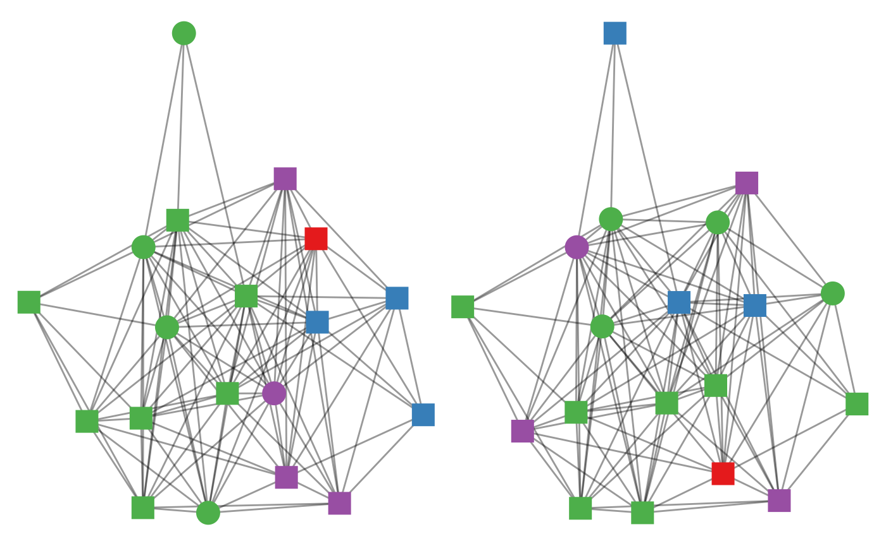
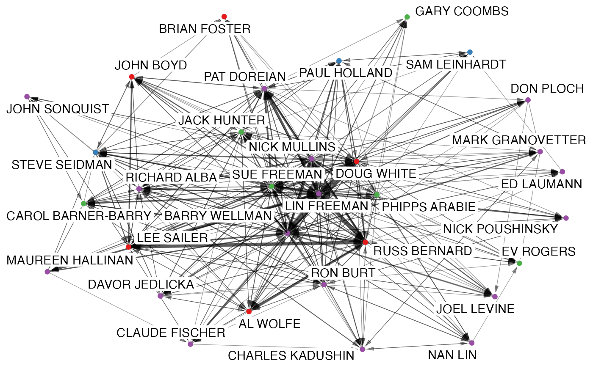
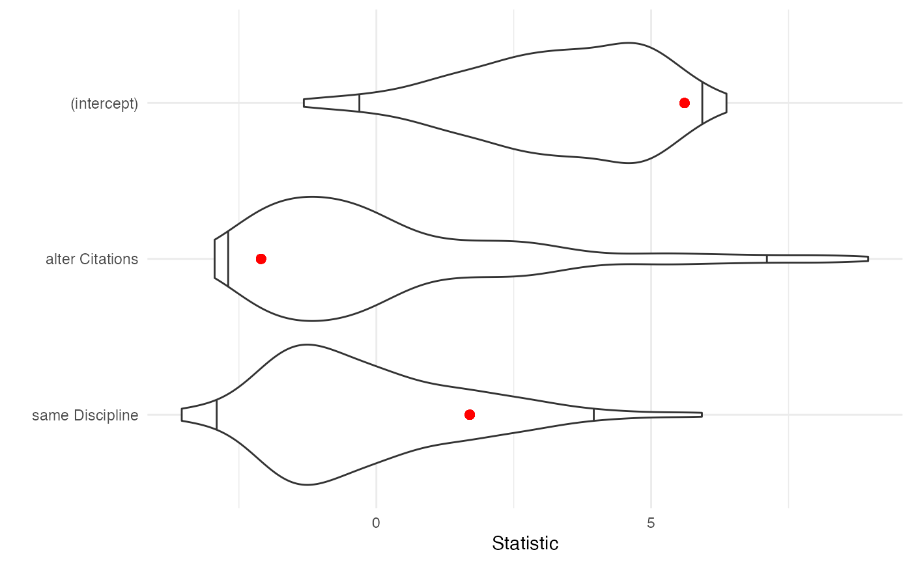

Setting up
For this lab, we’ll explore a couple of different datasets. First, let’s examine heterogeneity within the Marvel relationships dataset. Since this is a signed network, let’s first extract just the friendships. We’ll also concentrate on just the main component (no isolates). And, for the sake of simplicity, just the characters that appear in the comics more than average for these characters.
library(migraph)
marvel_friends <- to_unsigned(ison_marvel_relationships, keep = "positive")
marvel_friends <- to_main_component(marvel_friends)
marvel_friends <- marvel_friends %>% to_subgraph(Appearances >= mean(Appearances))
marvel_friends
#> # A tbl_graph: 19 nodes and 107 edges
#> #
#> # An undirected simple graph with 1 component
#> #
#> # Node Data: 19 × 10 (active)
#> name Gender Appearances Attractive Rich Intellect Omnilingual PowerOrigin
#> <chr> <chr> <int> <int> <int> <int> <int> <chr>
#> 1 Beast Male 7609 1 0 1 0 Mutant
#> 2 Capt… Male 9000 1 0 1 0 Human
#> 3 Colo… Male 5974 1 0 0 0 Mutant
#> 4 Cycl… Male 8853 1 0 1 0 Mutant
#> 5 Emma… Female 4777 1 0 0 1 Mutant
#> 6 Hawk… Male 3982 1 0 0 0 Human
#> # … with 13 more rows, and 2 more variables: UnarmedCombat <int>,
#> # ArmedCombat <int>
#> #
#> # Edge Data: 107 × 2
#> from to
#> <int> <int>
#> 1 1 2
#> 2 1 3
#> 3 1 4
#> # … with 104 more rowsThis gives us a dataset of nearly twenty characters and a little more than 100 edges. Recall that this data has several nodal attributes. Let’s explore a couple of these attributes visually.
autographr(marvel_friends,
node_shape = "Gender",
node_color = "PowerOrigin")
There seems to be a bit of a distribution of some of these variables.
Calculating diversity
Calculating Blau index
We can begin by calculating the Blau diversity for each attribute. Recall that the Blau index for any given diversity variable is:
\[1 - \sum p_i^2\]
where \(p\) represents the proportion belonging to any given category, and \(i\) indexes each of the given categories. As such a perfectly homogeneous group would receive a score of 0, while a perfectly heterogeneous group (with members spread evenly over the maximum categories) would receive a score of 1.
graph_blau_index(marvel_friends, "Gender")
#> [1] 0.3878116
graph_blau_index(marvel_friends, "PowerOrigin")
#> [1] 0.5927978
graph_blau_index(marvel_friends, "Attractive")
#> [1] 0.1883657
graph_blau_index(marvel_friends, "Rich")
#> [1] 0.1883657
graph_blau_index(marvel_friends, "Intellect")
#> [1] 0.465374Looks like there is more diversity in terms of where these characters got their powers, whether they have significant intellectual powers, and their gender, than their attractiveness or their wealth.
We can also cross-reference this diversity. For example, we might be interested in whether our comic book heroes are equally gender diverse across their (power) origin stories, or equally intellectually diverse across gender.1
graph_blau_index(marvel_friends, "Gender", "PowerOrigin")
#> Cluster God/Eternal Cluster Human Cluster Mutant Cluster Radiation
#> 0.0000000 0.0000000 0.4628099 0.3750000
graph_blau_index(marvel_friends, "Intellect", "Gender")
#> Cluster Female Cluster Male
#> 0.4800000 0.4591837Looks like some origin stories are much more diverse than others. Gods (just Thor here) and humans are all men, whereas those with mutant or radiation origin stories are more gender diverse. There doesn’t seem to be any significant difference in intellect across gender categories however. We can visualise this quite effectively using the node_groups argument:
autographr(marvel_friends,
node_group = "PowerOrigin",
node_shape = "Gender")
autographr(marvel_friends,
node_group = "Gender",
node_shape = "Intellect")
Calculating EI index
Calculating the EI index follows the same syntax. Recall that the EI index is calculated as:
\[\frac{E-I}{E+I}\]
where \(E\) is the number of ties present between a variable’s categories (i.e. external), and \(I\) is the number of ties present within a variable’s categories (i.e. internal). As such, an EI index of -1 suggests perfect homophily, whereas an EI index of +1 suggests perfect heterophily.
(obs.gender <- graph_ei_index(marvel_friends, "Gender"))
#> [1] -0.1962617
(obs.powers <- graph_ei_index(marvel_friends, "PowerOrigin"))
#> [1] -0.009345794
(obs.attract <- graph_ei_index(marvel_friends, "Attractive"))
#> [1] -0.6448598Looks like there might be some gender homophily present, but the score for power origin homophily is so close to 0 that it does not seem to signal much. There seems to be a fairly large effect for homophily on the basis of looks though…
But ultimately these are just scores, and this doesn’t tell us whether this is any more or less than what we might expect the score to be by chance for a network of this size and density and distribution of that attribute.
Testing scores
Conditional uniform graph tests
To get at that, we will simulate a series of random graphs (Erdös-Renyi/Bernoulli) of the same dimensions and distribution of the attribute to find out whether there is more homophily or heterophily than expected by chance.
rand.gender <- test_random(marvel_friends,
graph_ei_index, attribute = "Gender",
times = 200)
rand.power <- test_random(marvel_friends,
graph_ei_index, attribute = "PowerOrigin",
times = 200)
rand.attract <- test_random(marvel_friends,
graph_ei_index, attribute = "Attractive",
times = 200)
library(patchwork)
plot(rand.gender) /
plot(rand.power) /
plot(rand.attract)
This is really interesting. It looks like we cannot reject the null hypothesis that there is no homophily for gender nor for attractiveness, but we can reject the null hypothesis with respect to their power origin story. While the effect itself is close to 0 (neither strong homophily nor heterophily), all the random networks generated returned larger EI scores, between .1 and .4. So there is significantly less heterophily here than expected.
Quadratic assignment procedure tests
But perhaps the random graph is not the best reference group for establishing whether there is a significant homophily effect here. Another approach is to use permutations of the network. Permuting the network retains the structure of the network, but reassigns any labels (variables) randomly. Let’s first plot the observed data and some permuted data next to each other.
old <- autographr(marvel_friends,
labels = FALSE, node_size = 6,
node_color = "PowerOrigin",
node_shape = "Gender")
new <- autographr(generate_permutation(marvel_friends, with_attr = TRUE),
labels = FALSE, node_size = 6,
node_color = "PowerOrigin",
node_shape = "Gender")
library(patchwork)
old + new
This single permutation suggests there might otherwise be some more even mixing of these attributes, but it is just a single permutation. Let’s try a test that runs this over a succession of permutations, just as we did with random graphs.
perm.gender <- test_permutation(marvel_friends,
graph_ei_index, attribute = "Gender",
times = 200)
perm.power <- test_permutation(marvel_friends,
graph_ei_index, attribute = "PowerOrigin",
times = 200)Again, we see that there is perhaps nothing so surprising that we got the homophily score for gender that we did, but the lack of power origin heterophily is surprising.

Note how distributions are generally wider when permuting the observed network than creating a random distribution. That is, we expect a larger spread in the EI index for a network of this structure.
Network linear models
Next let us examine another network and see to what degree homophily plays a role. Here we are going to use the EIES dataset. The data were collected as part of an early experiment on communication between social network researchers who were using an Electronic Information Exchange System (EIES). The main network consists of 32 scholars with directed ties weighted by the total number of messages sent from \(i\) to \(j\) over the period of the study. Nodal attributes collected include the primary discipline and number of citations in the social science citation index at the start of the study.
ison_networkers
#> # A tbl_graph: 32 nodes and 440 edges
#> #
#> # A directed simple graph with 1 component
#> #
#> # Node Data: 32 × 3 (active)
#> name Discipline Citations
#> <chr> <chr> <dbl>
#> 1 LIN FREEMAN Sociology 19
#> 2 DOUG WHITE Anthropology 3
#> 3 EV ROGERS Other 170
#> 4 RICHARD ALBA Sociology 23
#> 5 PHIPPS ARABIE Other 16
#> 6 CAROL BARNER-BARRY Other 6
#> # … with 26 more rows
#> #
#> # Edge Data: 440 × 3
#> from to weight
#> <int> <int> <dbl>
#> 1 1 2 488
#> 2 1 3 28
#> 3 1 4 65
#> # … with 437 more rows
autographr(ison_networkers,
node_color = "Discipline")
Let’s use both the continuous Citations and the categorical Discipline variables and come up with a couple of key hypotheses:
- whether these researchers send more emails to those who are cited more
- whether there is disciplinary homophily
Let’s start with a pretty maximally specified model (note that it doesn’t make sense to include both ego and alter effects because these are undirected :
model1 <- network_reg(weight ~ alter(Citations) + same(Discipline),
ison_networkers, times = 200)We can use tidy methods to get the salient information from this model, and migraph includes also a plot method for these results to facilitate the quick interpretation of these results.
tidy(model1)
#> # A tibble: 3 × 4
#> term estimate statistic p.value
#> <chr> <dbl> <dbl> <dbl>
#> 1 (intercept) 15.4 5.61 0.03
#> 2 alter Citations -0.105 -2.10 0.305
#> 3 same Discipline 6.99 1.70 0.28
glance(model1)
#> # A tibble: 1 × 8
#> r.squared adj.r.squared sigma statistic p.value df df.residual nobs
#> <dbl> <dbl> <dbl> <dbl> <dbl> <dbl> <int> <int>
#> 1 0.0142 0.0102 43.4 3.55 0.0294 2 493 496
plot(model1)
Hmm, looks like we can’t say much from this fit. You can try and increase the number of times we permute, but it’s unlike to make much difference.
Note that this works for calculated categorical variables too, such as cluster/group assignment from community detection or equivalence classes.↩︎